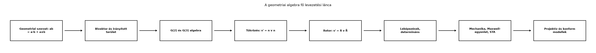

Egy teljes könyv után könnyű elveszni a részletekben: G(2), G(3),
rotor, kontrakció, Maxwell. Az összefoglaló alfejezet célja, hogy a
fogalmakat egyetlen térképre rendezze, és kiemelje azokat a
kapcsolatokat, amelyekre a további tanulás épülhet. A geometriai algebra
erőssége éppen az, hogy nagyon kevés alapműveletből nagyon sok ismert
matematikai tárgy származtatható; ezt a származtatási láncot mutatjuk
be, és a könyv legfontosabb eredményeit egy képlettáblában gyűjtjük
össze.
23.3.2 Fogalomtérkép
Definíció (fogalomtérkép). Fogalomtérképnek nevezzük
a tanult fogalmak olyan irányított gráfját, amelyben a csúcsok fogalmak
vagy állítások, az élek pedig azt jelzik, hogy az egyik fogalmat a
másikból vezetjük le, vagy a másikban használjuk fel.
A könyv fő levezetési lánca a következő:

A geometriai algebra fő levezetési lánca
- A csomópontok a könyv fő eredményei; a nyilak azt mutatják, melyik
fogalom mire épül.
A diagram egyenként is értelmezhető lépéseket mutat. A
geometriai szorzat definíciója
összekapcsolja a skalár- és a külső szorzatot; ebből születik a
bivektor mint irányított terület. A bivektorok és a
pszeudoszkalár felépítik a G(2) és G(3) algebrát. A
geometriai szorzat segítségével a tükrözést egyetlen szendvicsszorzat,
adja meg; két tükrözésből pedig a rotor keletkezik,
amely a forgatást
alakban írja le. A rotorok a lineáris leképezések és a
determináns geometriai értelmezéséhez vezetnek. Ugyanez az algebrai
gépezet hordozza a fizikai alkalmazásokat: a merev test
forgását, a Maxwell-egyenletet mint
,
valamint a Lorentz-transzformációkat. Végül a projektív és
konform modellek a pontokat és köröket is multivektorokként
kezelik.
23.3.3 Tételgyűjtemény és
képlettábla
Az alábbi táblázat a könyv legfontosabb, továbbvitt eredményeit
gyűjti össze. A hivatkozott alfejezet címére kattintva vissza lehet
lapozni a levezetéshez.
A táblázatban a képletek a könyv saját konvencióit követik:
,
egységbivektorra, a kvaternió-megfeleltetésnél az
előjelű, a CGA-ban
.
Más források konvenciói ettől eltérhetnek, ezért mindig érdemes a
bevezetőben rögzített jelöléseket figyelembe venni.
23.3.4 Kidolgozott példa a
képlettáblához
Forgassuk el a
vektort
-kal
a síkban. A síkbeli forgatás képlete
,
ahol
és
.
Lépésenként:
Mivel
és
,
ez
A bázisszorzás szabályai szerint
,
és
.
Így
A forgatás az
pozitív irányban történt, és valóban az eredeti
koordinátájú vektort
-kal
a
irányba forgatta.
23.3.5 Gyakori hibák
Sorrendi hiba. A geometriai szorzat nem
kommutatív;
,
kivéve ha
.
Például
,
de
.
A forgatás szendvicsszorzata sem szimmetrikus:
nem ugyanaz, mint
;
az utóbbi az ellenkező irányú forgatás.
Előjel- és konvencióhiba. A vektoriális szorzat
dualitásánál
,
nem pedig
.
Hasonlóan a kvaternió-megfeleltetésben a
bázisképéhez
tartozik ebben a könyvben; más könyvtárak ettől eltérő előjelezést
használhatnak. A pszeudoszkalárra G(3)-ban
,
ezért a duális
,
nem pedig
.
Fokszám-összekeverés. A
szorzat fokszám szerint bomlik:
vektor,
trivektor. Gyakori hiba, hogy valaki a skalárszorzat-képletet használja
bivektorra, vagy a bal kontrakciót kommutatívnak hiszi;
nem egyenlő
-val.
Rotor-szög kettőzés. A rotor
exponensében a fizikai forgatási szög fele szerepel. Ha valaki
-t
használ, akkor
szögű forgatást kap. Hasonlóan a két tükrözésnél az
és
egyenesek által bezárt szög kétszerese a forgatás szöge.
23.3.6 Önellenőrző kérdéssor
Az alábbi kérdések a teljes könyv anyagát lefedik. A válaszok a
feladatok megoldásai között találhatók.
Fogalmi kérdés. Milyen két jól ismert műveletet
egyesít a
azonosság?
Fogalmi kérdés. Mi a különbség a bivektor és a
vektor között a geometriai értelmezésben?
Kézi számolás. Számítsd ki
értékét G(2)-ben.
Kézi számolás. Határozd meg a
vektor
egyenesre való tükrözését.
Levezetési feladat. A két tükrözés eredményeként
kapott
szorzat milyen algebrai feltétel mellett valódi rotor? Ellenőrizd, hogy
.
Levezetési feladat. Mutasd meg, hogy a
forgatás megegyezik az
szendvicsszerű alakkal, ha
.
Alkalmazási kérdés. Melyik modellben írható le az
eltolás is szendvicsszorzattal, és mi a transzlátor képlete?
Alkalmazási kérdés. Miért nem sodródik a rotor
normáltsága a numerikus szimulációkban, szemben a mátrixos
orientációval?
23.3.7 Feladatok
Az önellenőrző kérdéssor fenti nyolc pontja egyben fokozatos
feladatsor is: az 1–2. feladat fogalmi, a 3–4. kézi számolás, az 5–6.
levezetési, a 7–8. alkalmazási jellegű. A megoldásokban lépésenként
haladunk.
23.3.8 Megoldások
A skalárszorzatot
(,
a szimmetrikus rész) és a külső szorzatot
(,
az antiszimmetrikus rész). Ez az alapazonosság a teljes geometriai
algebra forrása.
A vektor irányított szakasz, a bivektor irányított síkdarab. A
bivektor két vektor külső szorzataként
olyan objektum, amelynek nagysága a kifeszített paralelogramma területe,
irányítása pedig a
körüljárás.
.
Az
és az antikommutáció miatt ez
,
ahol
.
Tükrözés az
egyenesre:
.
Az első tag
.
A második tag
.
Így
.
Ez helyes: az
tengelyre tükrözve az
komponens előjelet vált.
,
ahol
egységvektorok. Reverzió:
,
mivel vektorok reverziója önmaguk. Így
,
hiszen
és
.
Tehát
valóban rotor.
Ha
,
akkor
.
G(2)-ben
antikommutál vektorokkal:
.
Ezért
A kettős szög képleteit használva adódik
,
ami a Síkbeli forgatás alfejezetben bemutatott
azonosság.
A konform geometriai algebra (CGA) modellben. A transzlátor
,
ahol
az eltolás vektora,
a végtelen vektor. A pontra alkalmazva
eltolást ad.
A rotor
feltétele a szendvicsszorzatból következően minden lépésben megőrződik,
ha a rotor exponenciális frissítéssel
keletkezik, mert az exponenciális rotor egységnyi. A mátrixos orientáció
ezzel szemben a numerikus integrálás során felhalmozza a kerekítési
hibákat, és a mátrix idővel elveszti ortogonalitását, ezért időnként
ortogonalizálni kell.
23.3.9 Továbbtanulás
A könyv befejezése után több irányban lehet tovább haladni.
Geometriai kalkulus. A VI. részben bevezetett
vektorderivált
általánosítása a multivektor-mezőkre; az integrálás, a Stokes-tétel
geometriai alakja, a differenciálformák és a geometriai analízis
kapcsolata. Ajánlott forrástípusok: Hestenes–Sobczyk, valamint Macdonald
Linear and Geometric Algebra vagy Vector and Geometric
Calculus tankönyvei.
STA mélyebben. A téridő-algebra relativisztikus
mechanikája, a Dirac-egyenlet geometriai alakja, a mérőelméletek és a
standard modell geometriai megfogalmazása. Doran–Lasenby klasszikus
tankönyvét érdemes kézbe venni.
CGA és PGA alkalmazások. A konform modell (CGA)
körökkel, gömbökkel, távolságokkal és inverziókkal; a projektív
geometriai algebra (PGA) pontokkal, egyenesekkel, síkokkal, motorokkal
és merev testekkel. Számítógépes grafika, robotika, gépi látás területén
hasznos. Ajánlott forrástípusok: Dorst–Fontijne–Mann könyve, valamint a
ganja.js és a clifford/kingdon Python-könyvtárak dokumentációja
(ellenőrzési igénnyel, mert a konvenciók eltérhetnek).
Numerikus megvalósítás. A VII. rész bitmaszkos
megvalósítása után érdemes hatékonyabb könyvtárakat tanulmányozni; a
saját mini könyvtár bővíthető pengék közötti meet/join műveletekkel,
reflexióval és konform motorokkal.
Az egyes források konvenciói eltérhetnek a könyvben használtaktól;
mindig ellenőrizni kell a pszeudoszkalár előjelét, a duális definícióját
és a rotor exponensének előjelét, mielőtt képleteket ültetünk át egyik
forrásból a másikba.
23.3.10 Rövid összefoglaló
A geometriai algebra egyetlen szorzatból, a
geometriai szorzatból építi fel a teljes fogalmi rendszert. A bivektorok
és a pszeudoszkalár
()
megadják G(2) és G(3) algebráját. A tükrözés
,
két tükrözésből pedig a rotor
,
amely a forgatást
alakban írja le. A vektoriális szorzat
duálisa; a rotorok a kvaterniókat és a spinorokat is magukba foglalják.
A leképezések pengékre való kiterjesztése adja a determinánst, a
vektorderivált
pedig a mechanikai és elektromágneses egyenleteket:
és
.
A konform modell
pontjai és
transzlátora mutatja, hogy az eltolás is szendvicsszorzat.
Továbbvitt eredmény. Ez az összefoglaló a teljes könyv
anyagát rendszerezi; a fogalomtérkép és a képlettábla a további
tanulmányokhoz nyújt kiindulópontot.
23.3.11 Források és ellenőrzési
hiányok
Az alfejezet nem vezet be új matematikai eredményt, hanem a könyv
korábbi alfejezeteire hivatkozik. A felsorolt tankönyvek és könyvtárak
klasszikus, stabil források, de pontos oldalszámot, kiadást vagy
verziószámot nem ellenőriztünk; a külső könyvtárak konvenciói
eltérhetnek a könyvben rögzítettektől. A fogalomtérkép és az önellenőrző
kérdéssor a szerző didaktikai összeállítása, nem külső forrásból átvett
anyag.